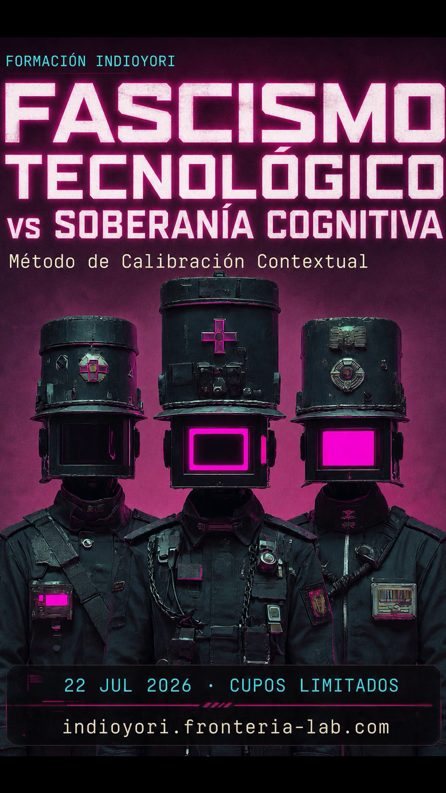

Archivo
El archivo de lo improbable
Todo lo que se resiste a desaparecer: PDFs, notas, posts, video y podcast. Lo que no cabe en un feed, aquí queda.
02
Video
La imagen es la portada; al hacer clic te lleva a la plataforma donde vive el video completo.

TikTok ↗Fascismo tecnológico vs Soberanía Cognitiva TikTok ↗Los medios masivos y la gramática global💡 ¿Prefieres reproducir aquí mismo? Puedes embeber un video en lugar de enlazarlo. Ejemplo para YouTube:
03
Podcast
Donde hablo más despacio, más específico y más íntimo. Más yo.
ep. 03
Gramática de los LLM: quién escribe cuando tú callas48 min · sobre la métrica del mundo que impone la IA
▶
ep. 02
RAG soberano en territorio41 min · datos que no salen del perímetro
▶
ep. 01
Qué es la Soberanía Cognitiva37 min · el punto de partida
▶
🎙️ Publica en Spotify/Apple/RSS y pega el reproductor a la derecha. También puedes subir el audio a tu propio servidor y usar <audio controls>.
04
PDFs & documentos
Ponencias, guías y códices. Zenodo / CLACSO para lo académico.